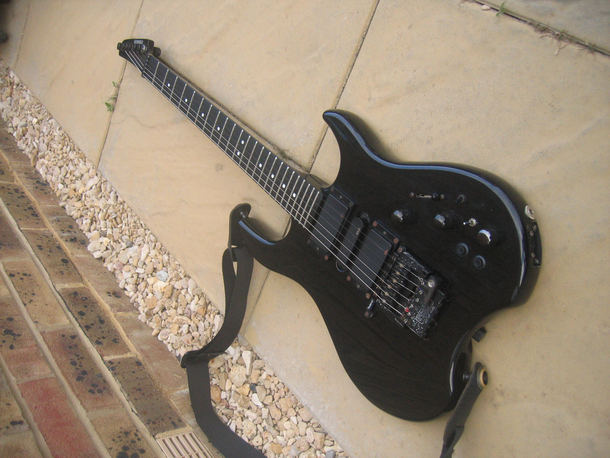

An item that is partially what I want for christmas is a guitar, I would like to make music at some point and my life and it woukd be a nice addition. Guitars made and used for musical desires and to absolutely rock out with. This could alos go well with if I woanted to try band out as I would already have an instrument. Plus I could have another skill under my pocket for when someone asks "what do you do for fun".
Type of Guitar: "Ibanez 4 String Bass Guitar, Right, Walnut Flat (GSRM20BWNF)"

Price: $285.70